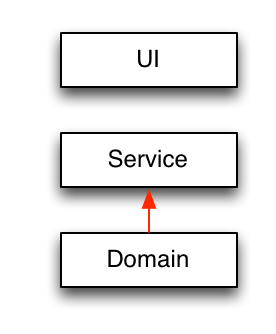

Reclaim Your Architecture!
Tools und Techniken um deine Software Architektur zurück zu erobern!
- Begriffsdefinition
- Die Feinde der Architektur
- Unsere Waffen (aka Tools und Techniken)
- Beispiele und Code
Rational Unified Process, 1999
“the highest level concept of a system in its environment. The architecture of a software system (at a given point in time) is its organization or structure of significant components interacting through interfaces, those components being composed of successively smaller components and interfaces“
Martin Fowler, 2003
“Stuff that's hard to change later“
Know your enemy!
Technische Schuld
“doing things the quick and dirty way sets us up with a technical debt, which is similar to a financial debt. Like a financial debt, the technical debt incurs interest payments, which come in the form of the extra effort that we have to do in future development because of the quick and dirty design choice.“
Bewußte Entscheidung!
Entropie (phys.)
“Tendenz in der unbelebten Welt zu immer größerer Unordnung.“
Unbewußte Entwicklung!
Symptome der Entropie
Schlecht zu warten
Schwer zu erweitern
Mangelnde Wiederverwendbarkeit
Schwer zu testen
Zunehmende Unverständlichkeit
Ursachen
Zirkuläre Abhängigkeiten
Zwischen Klasse, Packages, Modulen etc.
Fehlende Abstraktion
Klassen, Packages, Module haben sehr viele Abhängigkeiten
Keine oder mangelhafte Umsetzung von Architekturregeln
Unerlaubte Abhängigkeiten
Niedrige Kohäsion, hohe Kopplung
Kohäsion bezeichnet den Zusammenhalt innerhalb einer Komponente, Kopplung die äußere Bindung

Code smells
Zyklomatische Komplexität, Duplizierter Code, Große Klassen / Methoden, ...
Fight back!
Schritt 1: Bestandsaufnahme
“If you can't measure it, you can't manage it.“
- Bestehende Architektur ermitteln
- Dependency Structure Matrix (DSM) Analyse
- Zirkuläre Abhängigkeiten aufdecken
- Metriken sammeln

Schritt 2: Definition der Zielparameter
- Zielarchitektur bestimmen
- Ziel-Code-Coverage definieren
- Realistische Boundaries für Metriken definieren
Schritt 3: Zielparameter kontinuierlich überprüfen
- Degraph (oder JDepend)
- Jenkins + SonarQube
- Structure101
Links und weiterführende Informationen
- http://schauder.github.io/degraph/
- http://docs.sonarqube.org/display/HOME/Spaghetti+Design
- http://erik.doernenburg.com/2010/04/dependency-structure-matrix/
- http://www.ndepend.com/docs/dependency-structure-matrix-dsm
- http://structure101.com/resources/
- http://www.martinfowler.com/ieeeSoftware/coupling.pdf
- Java Application Architecture, Kirk Knoernschild